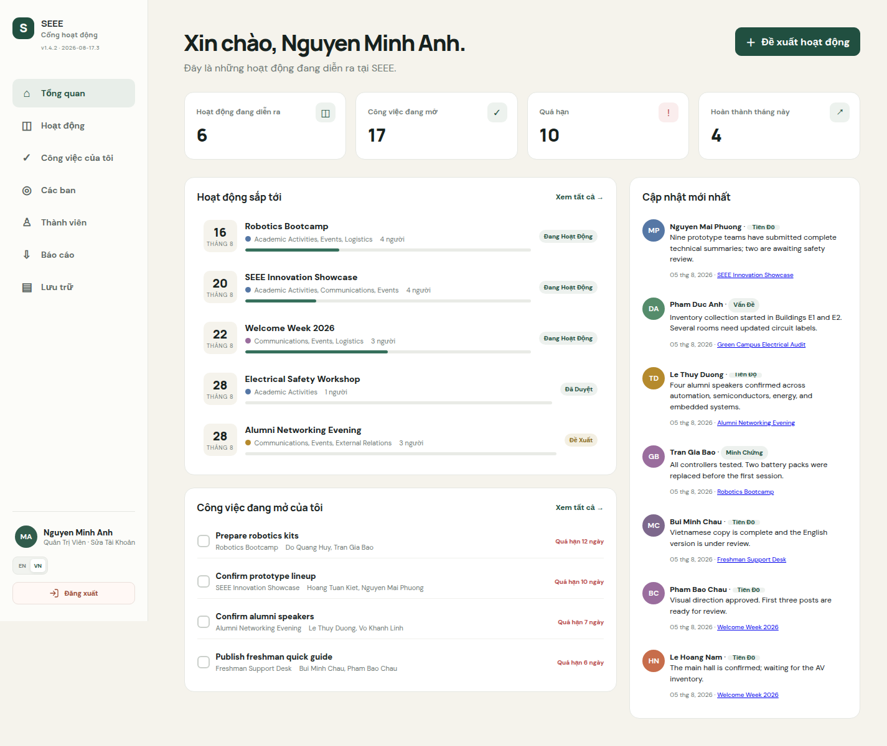
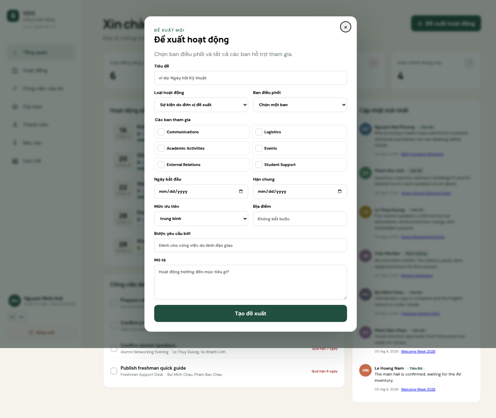
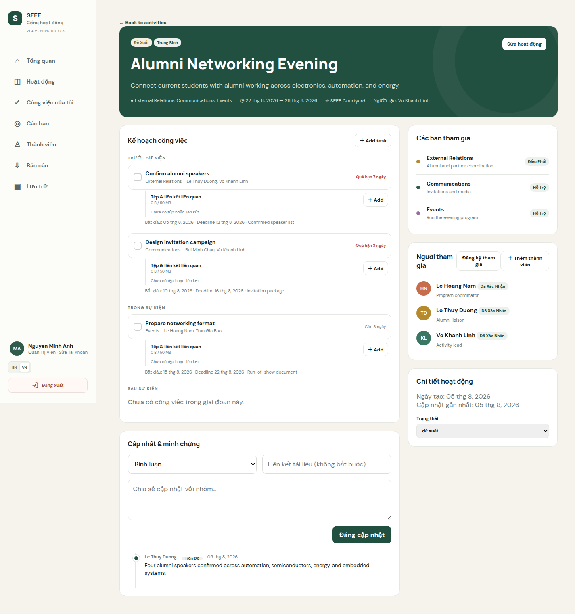
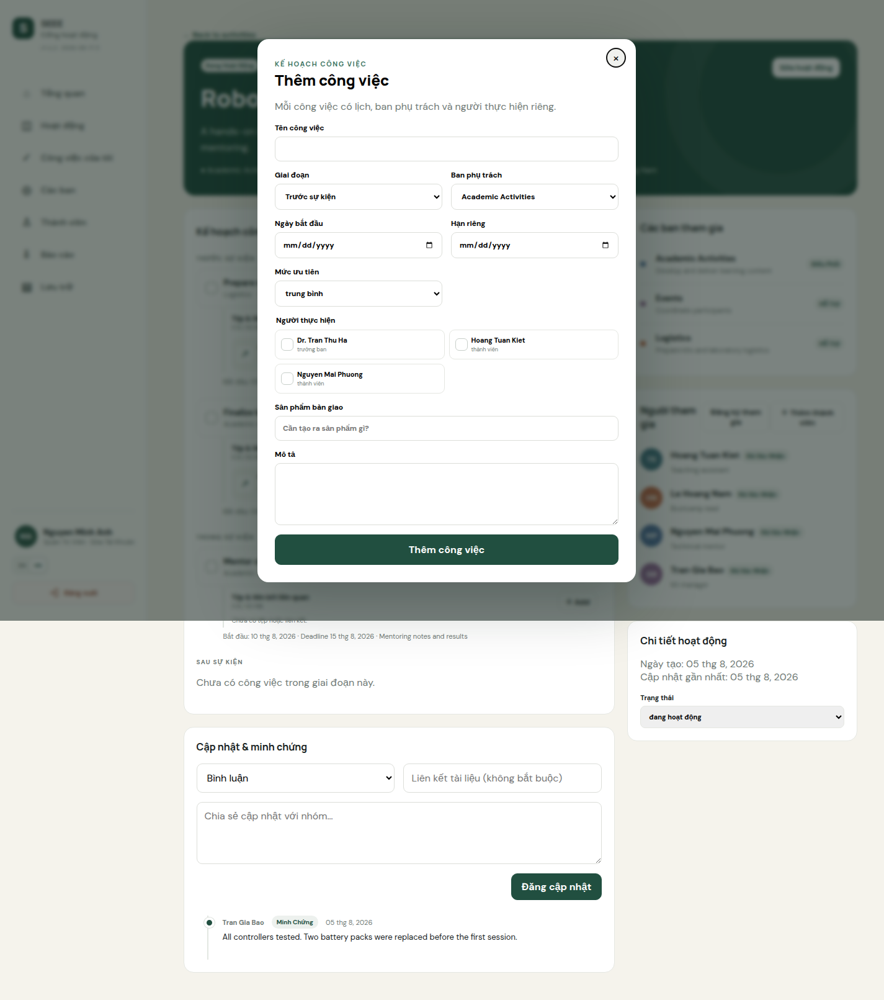
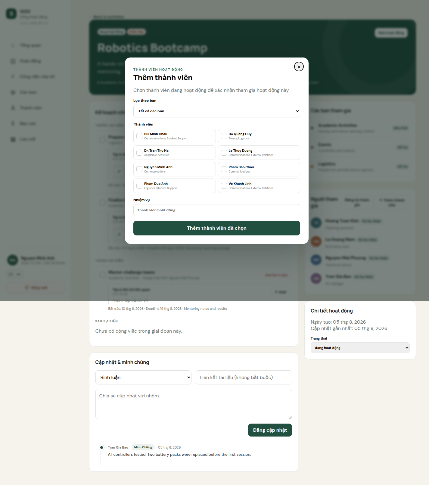
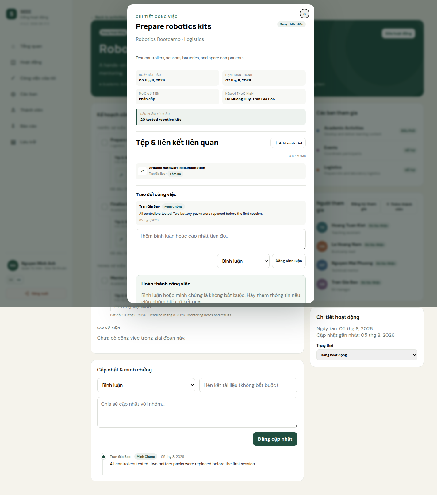
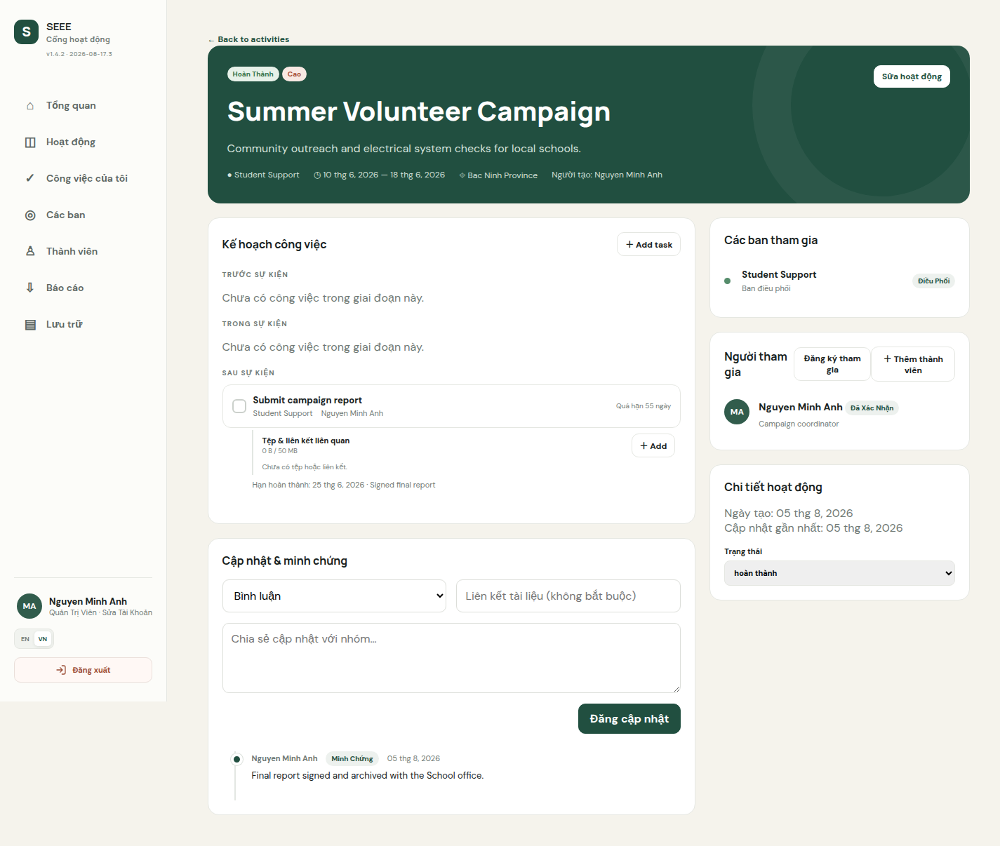
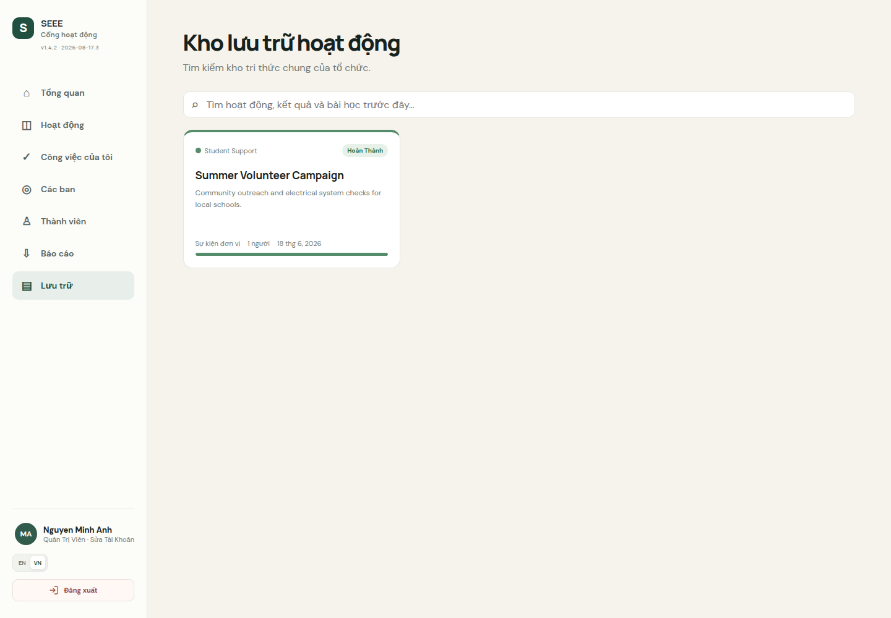
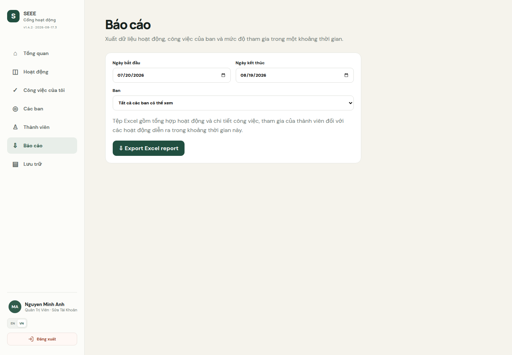

Hệ thống quản lý hoạt động, công việc, tiến độ và minh chứng dành cho Đoàn Thanh niên – Hội Sinh viên SEEE.
Phiên bản hệ thống: 1.4.2 Ngôn ngữ: Tiếng Việt Cập nhật: 19/08/2026
Mục lục
Giới thiệu và yêu cầu sử dụng
Đăng nhập, đổi ngôn ngữ và đăng xuất
Vai trò và quyền hạn
Màn hình Tổng quan
Quản lý tài khoản cá nhân
Quản lý thành viên và tài khoản
Quản lý ban và màu nhận diện
Quy trình đầy đủ của một hoạt động quy mô lớn
Tạo, phân công và hoàn thành công việc
Tài liệu, hình ảnh, liên kết và minh chứng
Kho lưu trữ hoạt động
Xuất báo cáo
Sử dụng trên điện thoại
Xử lý sự cố thường gặp
Danh sách kiểm tra nghiệm thu hoạt động
Địa chỉ hệ thống:https://sv-seee.site. Luôn sử dụng HTTPS để đăng nhập và tải minh chứng.
1. Giới thiệu và yêu cầu sử dụng
SEEE Activity Hub giúp tập trung thông tin hoạt động, ban tham gia, công việc con, người phụ trách, thời hạn, trao đổi và minh chứng. Mỗi người chỉ nhìn thấy và thao tác trên nội dung phù hợp với vai trò và các ban mà mình tham gia.
Chuẩn bị
Trình duyệt Chrome, Edge, Firefox hoặc Safari phiên bản mới.
Tài khoản do quản trị viên hoặc trưởng ban cấp.
Kết nối Internet ổn định khi tải tệp.
Tệp tải lên thuộc định dạng được hỗ trợ và tổng dung lượng của mỗi công việc không vượt quá 50 MB.
2. Đăng nhập, đổi ngôn ngữ và đăng xuất
Mở https://sv-seee.site.
Nhập địa chỉ email và mật khẩu được cấp.
Nhấn Đăng nhập.
Dùng nút EN / VN để đổi ngôn ngữ. Lựa chọn được lưu trên trình duyệt; tiếng Việt là ngôn ngữ mặc định.
Để thoát an toàn, kéo xuống cuối thanh bên trái và nhấn Đăng xuất. Trên điện thoại, mở nút menu ☰ trước.
Bảo mật: Không chia sẻ mật khẩu. Hãy đăng xuất khi dùng máy tính chung và đổi mật khẩu ngay sau lần đăng nhập đầu tiên.
3. Vai trò và quyền hạn
Quản trị viên
Xem toàn hệ thống; tạo, sửa, xóa tài khoản; quản lý mọi ban; tạo hoạt động; phân công và theo dõi tất cả tiến độ.
Trưởng ban
Quản lý thành viên thuộc ban mình phụ trách; đề xuất hoạt động; tạo và giao việc; xem tiến độ của ban.
Thành viên
Xem hoạt động liên quan, xem công việc được giao, cập nhật tiến độ, bình luận và cung cấp minh chứng.
Một thành viên phải thuộc ít nhất một ban và có thể thuộc nhiều ban. Trưởng ban chỉ quản lý tài khoản thành viên trong phạm vi ban mình phụ trách.
4. Màn hình Tổng quan
Trang Tổng quan hiển thị số hoạt động đang diễn ra, công việc đang mở, công việc quá hạn và công việc hoàn thành trong tháng. Các khối bên dưới cho biết hoạt động sắp tới, công việc cần xử lý và cập nhật mới nhất.
Chọn tên hoạt động để mở chi tiết.
Chọn tên công việc để xem thời hạn, người thực hiện và minh chứng.
Màu trên thẻ hoạt động là màu nhận diện của ban điều phối.
Nhãn đỏ hoặc trạng thái quá hạn cần được ưu tiên xử lý.
5. Quản lý tài khoản cá nhân
Nhấn vào tên và ảnh đại diện ở cuối thanh bên.
Cập nhật email, số điện thoại hoặc màu đại diện.
Nếu muốn đổi mật khẩu, nhập mật khẩu mới có ít nhất 8 ký tự. Để trống nếu không đổi.
Nhấn Lưu tài khoản.
Người dùng không tự đổi được họ tên hoặc vai trò. Hãy liên hệ quản trị viên hoặc người quản lý có thẩm quyền.
6. Quản lý thành viên và tài khoản
Dành cho quản trị viên và trưởng ban
Mở trang Thành viên. Quản trị viên nhìn thấy toàn bộ tài khoản; trưởng ban nhìn thấy thành viên trong các ban mình phụ trách.
Tạo tài khoản
Nhấn Tạo tài khoản.
Nhập họ tên, email, mật khẩu ban đầu và số điện thoại.
Quản trị viên chọn vai trò; tài khoản do trưởng ban tạo luôn là thành viên.
Chọn ít nhất một ban bằng cách nhấn vào từng thẻ ban.
Nhấn Tạo tài khoản.
Sửa hoặc xóa tài khoản
Tìm thẻ người dùng và nhấn Sửa.
Cập nhật thông tin, vai trò, ban hoặc mật khẩu rồi nhấn Lưu thay đổi.
Nhấn Xóa nếu cần loại tài khoản và xác nhận cảnh báo.
Nếu tài khoản đã tạo hoạt động, cập nhật hoặc minh chứng cần lưu lịch sử, hệ thống sẽ vô hiệu hóa thay vì xóa dữ liệu. Trưởng ban xóa một thành viên thuộc nhiều ban chỉ loại người đó khỏi các ban mình quản lý.
7. Quản lý ban và màu nhận diện
Mở Các ban để xem số thành viên và hoạt động hiện tại.
Thao tác
Cách thực hiện
Tạo ban
Quản trị viên nhấn Tạo ban, nhập tên, mô tả và chọn màu.
Sửa màu
Nhấn Sửa màu, chọn màu nhận diện rồi lưu.
Quản lý thành viên
Nhấn Quản lý thành viên để xem hoặc thêm tài khoản hiện có.
Xem tiến độ
Chọn Xem hoạt động để xem thành viên, công việc, quá hạn và tỷ lệ hoàn thành.
Màu của ban điều phối xuất hiện trên thẻ và thanh tiến độ hoạt động. Trong chi tiết hoạt động, mỗi ban tham gia có chấm màu riêng.
8. Quy trình đầy đủ của một hoạt động quy mô lớn
Quy trình chuẩn áp dụng cho sự kiện có nhiều ban, nhiều thành viên và công việc trải qua các giai đoạn trước, trong và sau sự kiện.
Đề xuất
→
Đã duyệt
→
Lập kế hoạch
→
Đang hoạt động
→
Tổng kết
→
Hoàn thành
→
Lưu trữ & báo cáo
Nguyên tắc: Mỗi công việc phải có ban phụ trách, người thực hiện, hạn riêng và sản phẩm bàn giao. Chỉ hoàn thành hoạt động khi mọi phần việc bắt buộc, kết quả và minh chứng đã được kiểm tra.
8.1. Chuẩn bị tổ chức và kiểm tra nguồn lực
Quản trị viênTrưởng ban
Kiểm tra các ban đã được tạo, có màu nhận diện và có trưởng ban.
Kiểm tra tài khoản của thành viên, vai trò và tư cách thành viên trong từng ban.
Từ Tổng quan, rà soát hoạt động đang chạy, công việc quá hạn và lịch sắp tới để tránh xung đột nguồn lực.
Thống nhất một người chịu trách nhiệm điều phối chung trước khi lập đề xuất.

Hình 1 — Tổng quan giúp người quản lý kiểm tra hoạt động, công việc mở, quá hạn và cập nhật mới nhất trước khi tạo sự kiện mới.
8.2. Tạo đề xuất hoạt động
Trưởng ban hoặc Quản trị viên
Chọn Hoạt động → Đề xuất hoạt động.
Nhập tiêu đề rõ mục tiêu, chọn loại sự kiện hoặc nhiệm vụ được giao.
Chọn ban điều phối và chọn lại ban đó trong danh sách các ban tham gia.
Chọn toàn bộ ban hỗ trợ; nhập ngày bắt đầu, hạn chung, ưu tiên và địa điểm.
Nếu do lãnh đạo giao, ghi rõ người hoặc đơn vị yêu cầu.
Mô tả mục tiêu, đối tượng, quy mô, đầu ra dự kiến và giới hạn quan trọng.
Nhấn Tạo đề xuất. Hoạt động có trạng thái Đề xuất.

Hình 2 — Biểu mẫu đề xuất: phải chọn ban điều phối, các ban tham gia, thời gian, ưu tiên và mô tả.
8.3. Rà soát, chỉnh sửa và phê duyệt
Quản trị viên phối hợp Ban điều phối
Mở hoạt động ở trạng thái Đề xuất.
Kiểm tra mục tiêu, phạm vi, ban tham gia, lịch, địa điểm và nguồn lực.
Nếu thiếu thông tin, chọn Sửa hoạt động, cập nhật rồi lưu.
Nếu không triển khai, chuyển trạng thái thành Đã hủy và ghi lý do trong phần cập nhật.
Nếu chấp thuận, chuyển trạng thái thành Đã duyệt.
Điểm kiểm soát phê duyệt: Chưa chuyển sang Đã duyệt nếu chưa xác định được ban điều phối, các ban hỗ trợ, khoảng thời gian và đầu ra chính.

Hình 3 — Trang chi tiết cho phép kiểm tra các ban, người tham gia, kế hoạch và thay đổi trạng thái.
8.4. Lập kế hoạch nhiều giai đoạn và giao việc
Trưởng banQuản trị viên
Mở hoạt động đã duyệt và nhấn Thêm công việc.
Chia kế hoạch theo Trước sự kiện, Trong sự kiện và Sau sự kiện. Với nhiệm vụ nhỏ, dùng giai đoạn Chung.
Đặt tên công việc theo động từ và kết quả, ví dụ “Hoàn tất sơ đồ bố trí khu vực”.
Chọn ban chịu trách nhiệm. Danh sách người thực hiện tự giới hạn theo ban đó.
Chọn một hoặc nhiều người thực hiện; đặt ngày bắt đầu, hạn riêng và ưu tiên.
Ghi sản phẩm bàn giao có thể kiểm chứng: biểu mẫu, danh sách, ảnh, báo cáo hoặc đường dẫn.
Lặp lại đến khi mọi đầu việc trước, trong và sau sự kiện đều có chủ sở hữu.

Hình 4 — Mỗi công việc có giai đoạn, ban phụ trách, lịch riêng, người thực hiện và sản phẩm bàn giao.
8.5. Xác nhận người tham gia
Trưởng banQuản trị viên
Trong khối Người tham gia, nhấn Thêm thành viên.
Dùng Lọc theo ban để thu hẹp danh sách.
Kiểm tra tên ban hiển thị dưới từng người, đặc biệt với thành viên thuộc nhiều ban.
Chọn các thành viên; có thể đổi bộ lọc mà không làm mất lựa chọn trước đó.
Nhập nhiệm vụ chung của nhóm người được chọn và nhấn Thêm thành viên đã chọn.
Thành viên tự đăng ký bằng nút Đăng ký tham gia cần được người quản lý rà soát khi phân công chính thức.

Hình 5 — Bộ lọc ban và tên các ban của từng người trong cửa sổ thêm thành viên.
8.6. Khởi động và điều hành hoạt động
Quản trị viênTrưởng banThành viên
Khi kế hoạch và nhân sự đã sẵn sàng, chuyển trạng thái sang Đang hoạt động.
Thành viên mở Công việc của tôi hoặc chọn công việc trong trang hoạt động.
Đăng cập nhật tiến độ thường xuyên; dùng loại Vấn đề khi có rủi ro cần điều phối.
Thêm liên kết, tài liệu, ảnh hoặc minh chứng vào đúng công việc.
Trưởng ban theo dõi hạn riêng, công việc quá hạn và cân bằng khối lượng giữa các thành viên.
Khi đầu ra đạt yêu cầu, người thực hiện thêm bình luận hoàn thành và nhấn Đánh dấu hoàn thành.

Hình 6 — Chi tiết công việc tập trung lịch, người thực hiện, trao đổi, tài liệu và thao tác hoàn thành.
8.7. Kiểm tra sau sự kiện và tổng kết
Ban điều phốiQuản trị viên
Hoàn thành các việc sau sự kiện: báo cáo, truyền thông, tài chính, phản hồi và bàn giao hồ sơ.
Kiểm tra mọi công việc bắt buộc đã ở trạng thái Hoàn thành.
Đối chiếu người tham gia, người thực hiện và minh chứng với thực tế.
Chọn Sửa hoạt động, nhập Tóm tắt kết quả, kết quả đo được và bài học kinh nghiệm.
Nếu còn thiếu, đăng yêu cầu bổ sung và giữ trạng thái Đang hoạt động.
Khi hồ sơ đầy đủ, chuyển trạng thái hoạt động thành Hoàn thành.
Điểm kiểm soát kết thúc: Không đóng hoạt động chỉ vì đã qua ngày tổ chức; phải hoàn tất cả nhiệm vụ sau sự kiện và hồ sơ minh chứng.

Hình 7 — Hoạt động hoàn thành vẫn giữ kế hoạch, người tham gia, kết quả và lịch sử cập nhật.
8.8. Lưu trữ và tra cứu
Tất cả người có quyền xem
Mở Lưu trữ sau khi hoạt động được chuyển sang Hoàn thành.
Tìm theo tên, mô tả, kết quả hoặc bài học.
Mở thẻ hoạt động để xem lại nhiệm vụ, người đóng góp, tài liệu và cập nhật.
Dùng hồ sơ làm căn cứ bàn giao nhiệm kỳ và chuẩn bị hoạt động tương tự.

Hình 8 — Kho lưu trữ là bộ nhớ chung của tổ chức đối với các hoạt động đã hoàn thành.
8.9. Xuất báo cáo đóng góp
Quản trị viênTrưởng ban
Mở Báo cáo.
Chọn ngày bắt đầu và ngày kết thúc; hệ thống lấy các hoạt động giao với khoảng thời gian này.
Chọn một ban hoặc tất cả các ban có quyền xem.
Nhấn Xuất báo cáo Excel.
Kiểm tra ba trang tính: hoạt động, thành viên ban và đóng góp chi tiết.

Hình 9 — Báo cáo Excel tổng hợp hoạt động, công việc và mức độ tham gia theo khoảng thời gian.
9. Tạo, phân công và hoàn thành công việc
Trường
Yêu cầu đối với hoạt động quy mô lớn
Tên công việc
Ngắn gọn, bắt đầu bằng hành động và thể hiện kết quả.
Giai đoạn
Đúng thời điểm trước, trong hoặc sau sự kiện.
Ban phụ trách
Một ban chịu trách nhiệm chính; người được giao phải thuộc ban này.
Người thực hiện
Ít nhất một người; nên có người chính và người phối hợp cho việc quan trọng.
Lịch riêng
Sớm hơn hạn chung đủ để có thời gian kiểm tra và sửa lỗi.
Sản phẩm
Có thể xác nhận bằng tệp, ảnh, liên kết, danh sách hoặc báo cáo.
Chọn tên công việc để xem bối cảnh, lịch, ưu tiên, người thực hiện, tài liệu và trao đổi. Chỉ người được giao hoặc người quản lý ban liên quan mới được cập nhật trạng thái.
10. Tài liệu, hình ảnh, liên kết và minh chứng
Mở chi tiết công việc và nhấn Thêm tư liệu.
Chọn mục đích: làm rõ, minh chứng, vấn đề hoặc sản phẩm bàn giao.
Đặt tên hiển thị có ngày hoặc phiên bản; thêm liên kết hoặc tải tệp.
Kiểm tra tư liệu xuất hiện đúng công việc trước khi đánh dấu hoàn thành.
Hỗ trợ ảnh, PDF, tệp Office, văn bản, CSV và ZIP.
Tổng dung lượng tệp của mỗi công việc tối đa 50 MB cho tất cả người dùng.
Liên kết ngoài không tính vào hạn mức 50 MB.
Tệp được bảo vệ và chỉ người có quyền xem hoạt động mới truy cập được.
Đặt tên như “Biên bản nghiệm thu 19-08” hoặc “Danh sách tham dự bản cuối”, không dùng tên mơ hồ như “file1.pdf”.
11. Kho lưu trữ hoạt động
Kho lưu trữ chỉ chứa hoạt động đã hoàn thành. Không xóa tài khoản hoặc thay đổi dữ liệu lịch sử chỉ để làm đẹp báo cáo; hệ thống cần giữ mối liên hệ giữa hoạt động, công việc và người đóng góp.
12. Xuất báo cáo
Quản trị viên xuất được tất cả ban; trưởng ban chỉ xuất được ban mình phụ trách. Báo cáo sử dụng ngôn ngữ giao diện đang chọn và gồm:
Hoạt động: trạng thái, lịch, ban, số công việc và người tham gia.
Thành viên ban: số việc được giao, số việc hoàn thành và số hoạt động tham gia.
Đóng góp của thành viên: từng công việc, hạn, trạng thái và trách nhiệm tham gia.
13. Sử dụng trên điện thoại
Nhấn ☰ để mở thanh điều hướng.
Các danh sách tự chuyển thành một cột để dễ đọc.
Nhấn trực tiếp vào thẻ ban hoặc thành viên để chọn hay bỏ chọn.
Khi tải ảnh, chờ thông báo hoàn tất trước khi đóng trình duyệt.
Nếu biểu mẫu bị bàn phím che, cuộn xuống để thấy nút lưu.
14. Xử lý sự cố thường gặp
Hiện tượng
Cách xử lý
Không đăng nhập được
Kiểm tra email, mật khẩu, trạng thái tài khoản và kết nối mạng. Nhờ quản trị viên đặt lại mật khẩu nếu cần.
Không thấy thao tác quản lý
Kiểm tra vai trò và phạm vi ban; tải lại bằng Ctrl+Shift+R; kiểm tra phiên bản dưới logo là 1.4.2.
Không thấy người để giao việc
Người đó phải là thành viên đang hoạt động của ban chịu trách nhiệm.
Không thấy ban trong cửa sổ thêm người
Kiểm tra thành viên chưa tham gia hoạt động và có tư cách thành viên ban; tải lại mạnh để nhận mã giao diện mới.
Không tải được tệp
Kiểm tra định dạng, hạn mức chung 50 MB và giới hạn tải lên của máy chủ.
Trang báo “Endpoint not found”
Máy chủ Node.js có thể chưa được khởi động lại sau triển khai.
Giao diện chưa cập nhật
Tải lại mạnh, xóa cache hoặc thử cửa sổ ẩn danh.
15. Danh sách kiểm tra nghiệm thu hoạt động
Trước khi chuyển sang Đang hoạt động
Mục tiêu, phạm vi, địa điểm và thời gian đã rõ.
Ban điều phối và tất cả ban hỗ trợ đã được chọn.
Mỗi đầu việc có ban, người thực hiện, hạn riêng và sản phẩm.
Người tham gia đã được xác nhận và có trách nhiệm.
Các rủi ro quan trọng có người theo dõi.
Trước khi chuyển sang Hoàn thành
Tất cả công việc bắt buộc đã hoàn thành.
Công việc quá hạn đã có kết quả hoặc giải trình.
Tài liệu và minh chứng quan trọng đã được tải lên.
Danh sách người tham gia và đóng góp đã được đối chiếu.
Tóm tắt kết quả và bài học kinh nghiệm đã được nhập.
Đã kiểm tra hoạt động xuất hiện trong Lưu trữ.
Đã xuất và lưu báo cáo cần thiết.
Dữ liệu và tệp tải lên được sao lưu định kỳ.
Tài liệu nội bộ SEEE Activity Hub · Phiên bản 1.4.2 · Ngày 19/08/2026